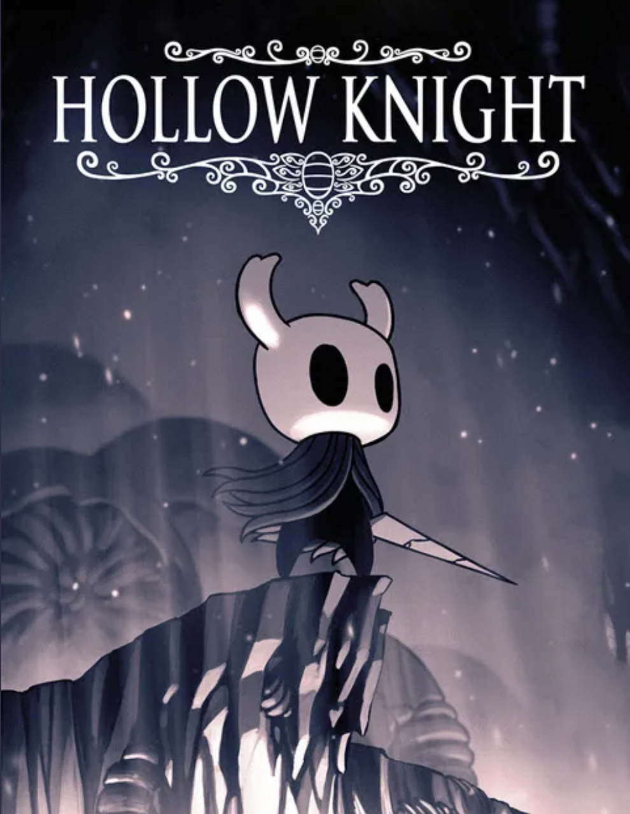
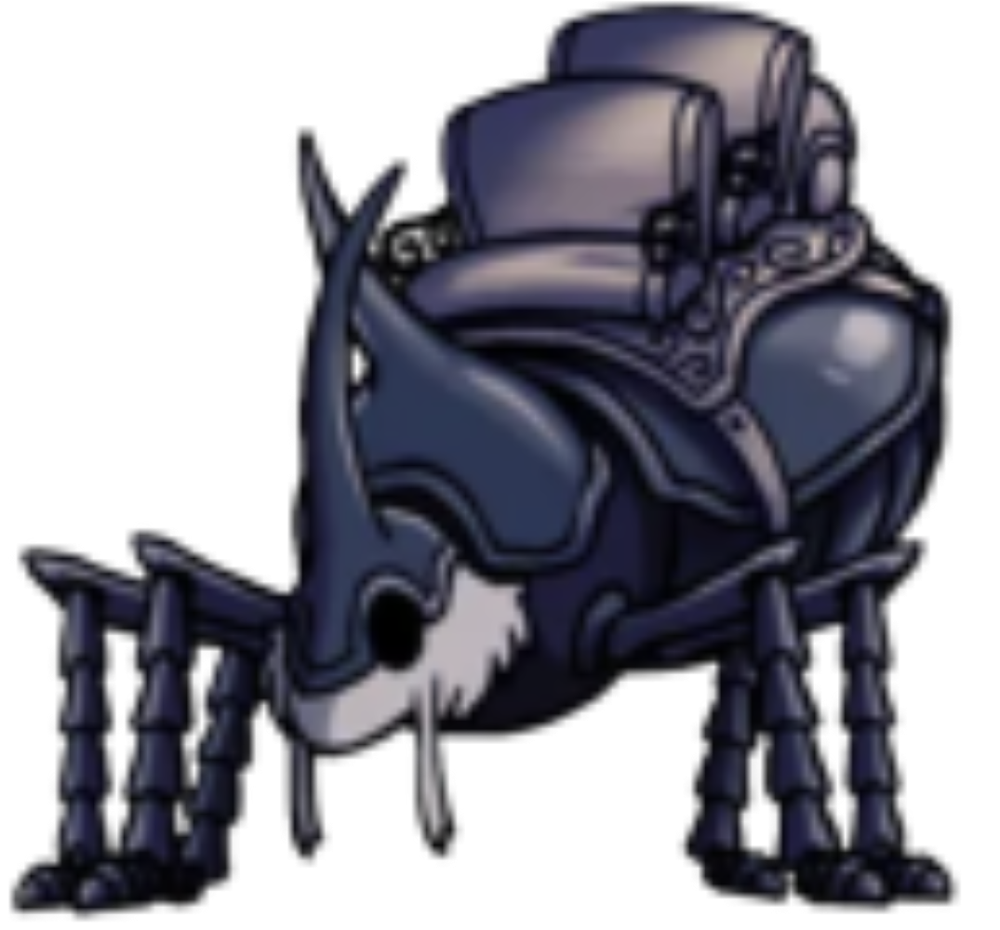
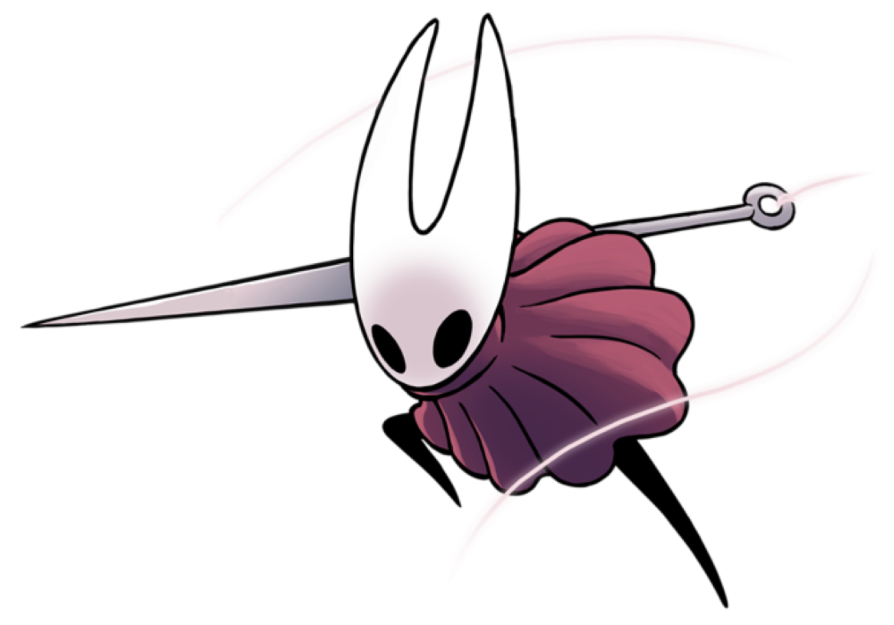
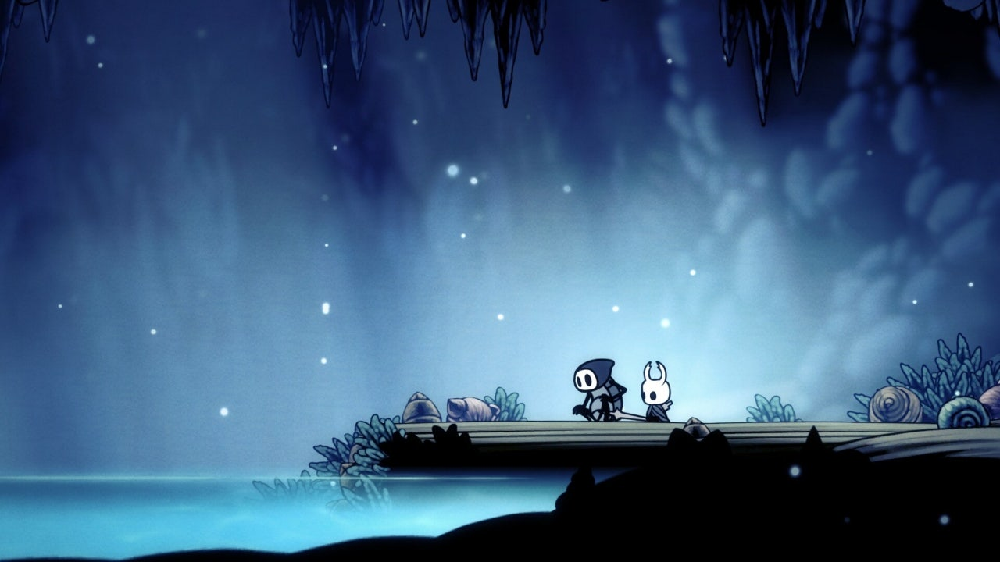
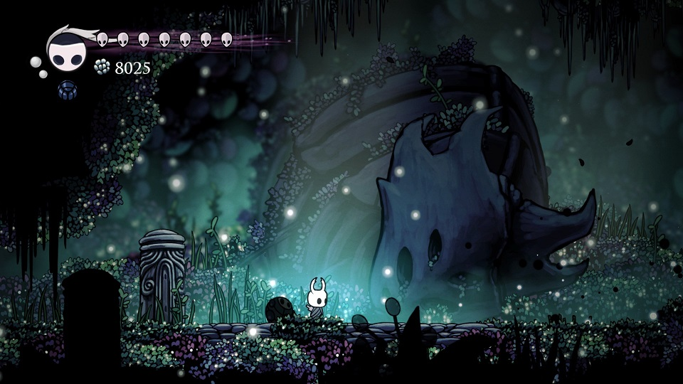
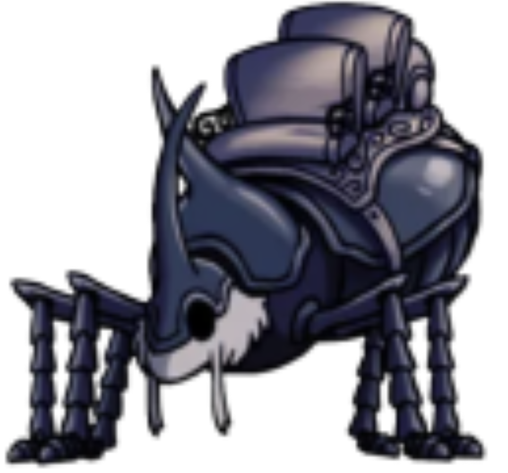
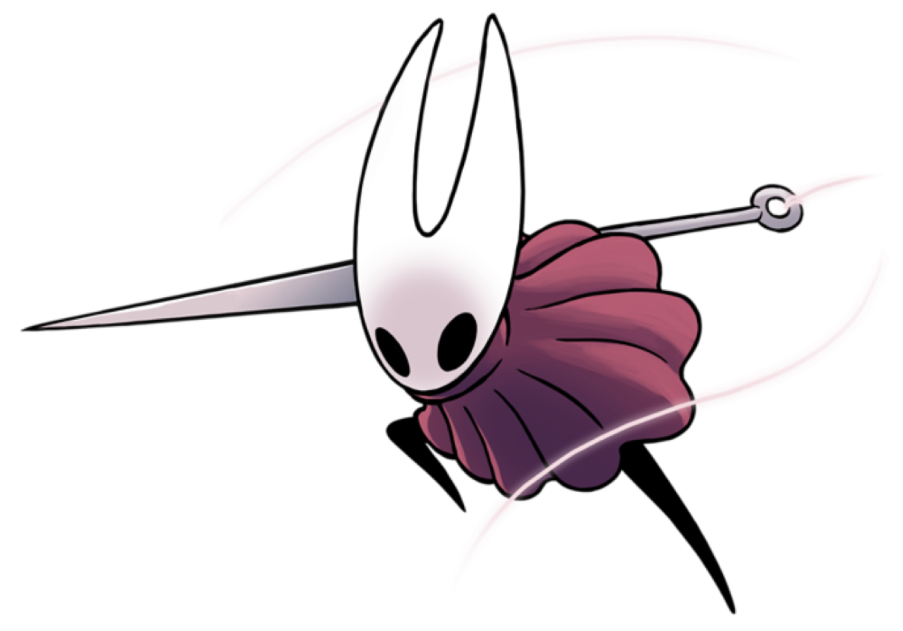
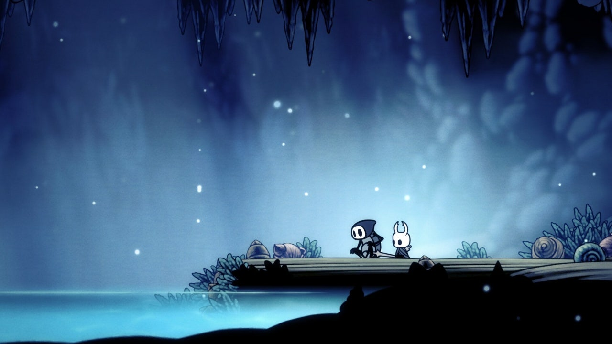
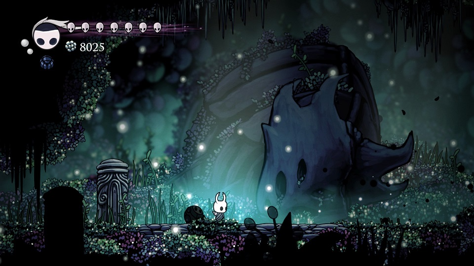

할로우나이트

출시일 : 2017년 2월 25일
장르 : 플랫포머, 액션 어드벤처, 메트로배니아, 소울라이크
가격 : 16,500원 (dlc : 5,500원)
할로우 나이트에서 자신만의 길을 구축하세요! 크게 파괴된 곤충과 영웅의 왕국을 통한 서사 액션 어드벤처입니다. 손으로 그린 클래식 2D 스타일로 구불구불한 동굴을 탐험하고 오염된 생물과 싸우고 이상한 곤충들과 친구가 되어 보세요.

기준일:
2024-12-21 |
|
|---|---|
| 메타스코어 87/100 | 유저 평점 9.1/10 |

기준일:
2024-12-21 |
|
|---|---|
| 종합 평가 | 최근 평가 |
| 압도적으로
긍정적(97%) (평가 341,951개) |
압도적으로
긍정적(96%) (평가 5,603개) |
1. 매트로바니아 장르의 재미 극대화
 미로같은 맵을 탐험하면서 장비를 강화하고 숨겨진 통로, 비밀, 새로운 능력을 발견하는 즐거움을 제공한다.
플레이어는 게임 진행 방식과 순서를 자유롭게 선택할 수 있어 자신만의 모험을 만들어갈 수 있다.
미로같은 맵을 탐험하면서 장비를 강화하고 숨겨진 통로, 비밀, 새로운 능력을 발견하는 즐거움을 제공한다.
플레이어는 게임 진행 방식과 순서를 자유롭게 선택할 수 있어 자신만의 모험을 만들어갈 수 있다.
2. 깊이 있는 세계관과 곤충 컨셉을 잘 살린 캐릭터 디자인  
3. 좋은 그래픽과 음악을 통한 폐허 분위기 극대화
 게임 사운드트랙은 장면의 감정을 완벽하게 표현하며, 때로는 웅장하고 때로는 고요하게 플레이어를 감싸준다. 각 지역과 캐릭터의 개성을 돋보이게 하며, 게임의 전체적인 분위기를 풍성하게 만든다.
미로같은 맵을 탐험하면서 장비를 강화하고 숨겨진 통로, 비밀, 새로운 능력을 발견하는 즐거움을 제공한다.
플레이어는 게임 진행 방식과 순서를 자유롭게 선택할 수 있어 자신만의 모험을 만들어갈 수 있다.2. 깊이 있는 세계관과 곤충 컨셉을 잘 살린 캐릭터 디자인  
3. 좋은 그래픽과 음악을 통한 폐허 분위기 극대화
 게임 사운드트랙은 장면의 감정을 완벽하게 표현하며, 때로는 웅장하고 때로는 고요하게 플레이어를 감싸준다. 각 지역과 캐릭터의 개성을 돋보이게 하며, 게임의 전체적인 분위기를 풍성하게 만든다.